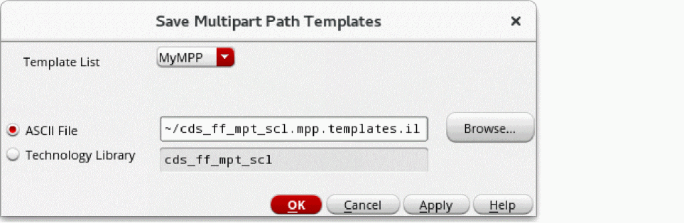

Saving MPP Templates to an ASCII File
When you save a multipart path (MPP) to an ASCII file, you can enter a new file name or overwrite an existing file. The system does not append to an existing ASCII file.
To save to one or all MPP templates to an ASCII file:
-
In the Create Multipart Path form, click the Save Template button.
The Save Multipart Path Templates form appears.
 - From Template List, choose the name of the MPP template you want to save or choose All Templates to save every template in the list.
-
Select ASCII File.
If you use the name of an existing ASCII file, it is overwritten. -
Type the ASCII file name, or path and file name, or keep the default.
If you want to designate a particular value as the default for the ASCII File field, you can set the mppASCIIFileName environment variable. -
Click OK.
If the system overwrites an existing ASCII file, the following message appears in the CIW:Template
templateNameis replacing an existing template by the same name.
When you save an MPP to an ASCII file, the system also updates the temporary technology file in the virtual memory.
Whenever you load multipart path (MPP) templates from ASCII files, they overwrite the templates in the technology file in the virtual memory that have matching names. Later, when you save changes to your technology library on the disk, the templates in the virtual memory overwrite templates with matching names in the technology library on the disk. If you do not want this to happen, see
Related Topics
Multipart Path Environment Variables
Flow for Creating Multipart Paths
Return to top